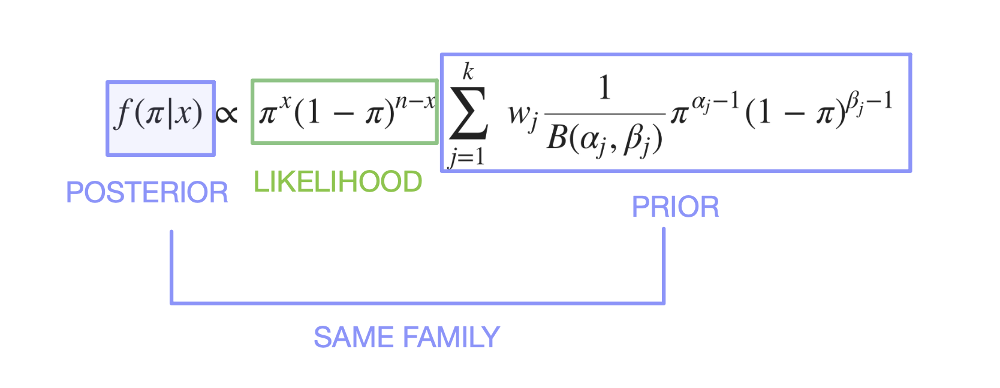
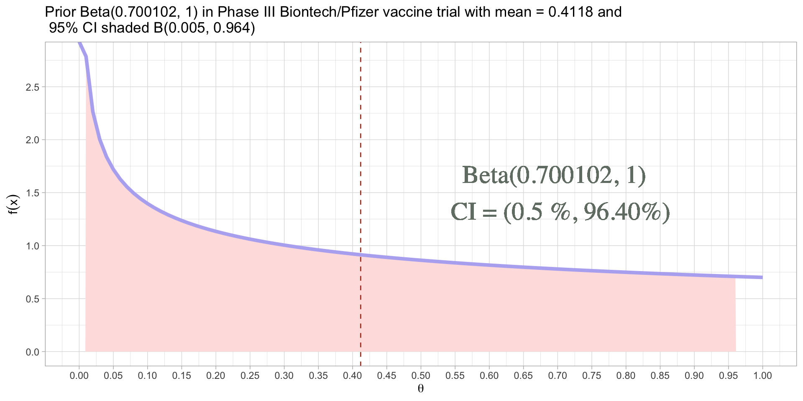
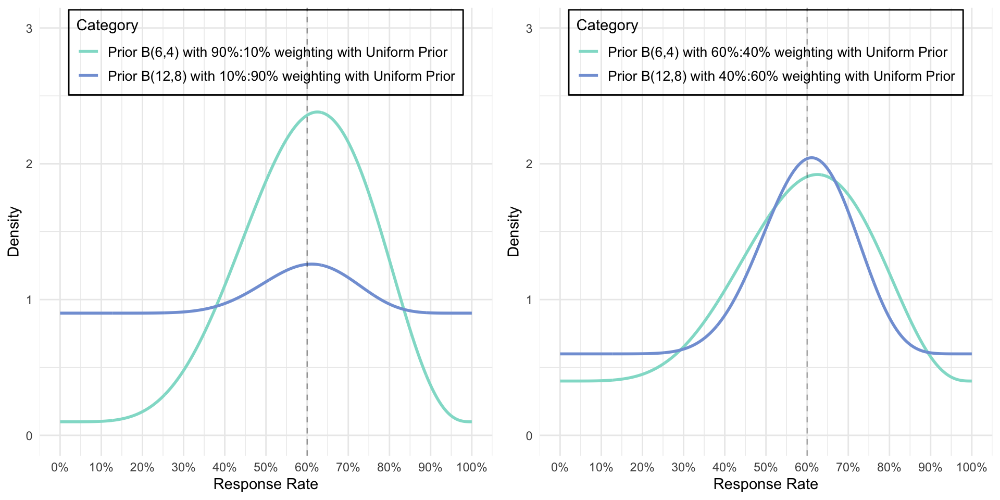
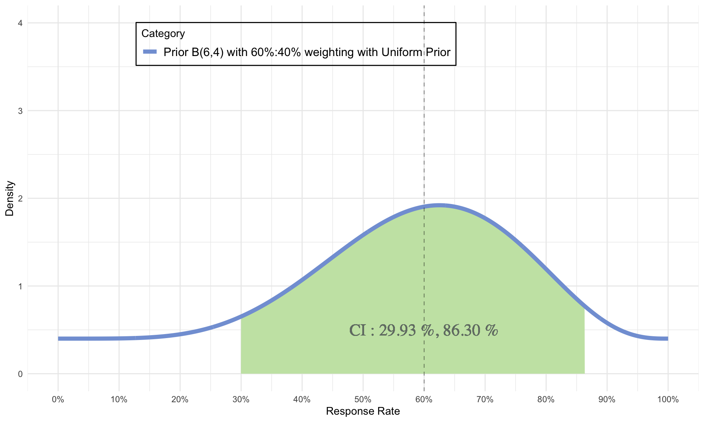

A Bayesian approach to decision making in early development clinical trials: phase1b R package
NS&IBGH Scientific Knowledge Sharing Meeting
Novartis Headquartes
Introduction

Introduction


Early development trials and why phase1b?
Objectives
- introduce Beta Binomial model
- explore
postprobandpredprob - explore simulation studies using
ocPostprob - question and answer
The Posterior Construction
\[ {P( B | A)} = { {P(A|B)P(B)} \over {P(A) } } \]
Beta Prior is a conjugate to the Posterior. Merriam-Webster Dictionary on “conjugate” : coupled, connected, or related.
Prior and Posterior of Beta Distribution for response rate
Conjugate Prior is \(f(\pi)\), where \(\pi \sim {Beta(\alpha, \beta)}\), same family of distribution of Posterior (see below)
We know the mean response rate (RR) is : \[\pi = \ \frac {\alpha}{\alpha + \beta}\]
Likelihood is \(f(x|\pi)\), where \(x \sim {Binomial(x, n)}\)
The updated Posterior \(f( \pi | x )\) is again a \(Beta\) distribution (same family as prior) : \[ \pi| \ x \sim Beta(\alpha + x, \ \beta + n - x)\] where \(x\) is the number of responders of current trials
Detour : Polack et al (2020), Phase III trial
Beta Prior and Mean for BNT162b2 Phase III :
History and how to install :
2015 : Started as a need in Roche’s early development group, package development led by Daniel Sabanés Bové in 2015.
2023 : Refactoring, Renaming, adding Unit and Integration tests as current State-of-Art Software Engineering practice.
2025 : CRAN submission is anticipated
100% written in R and Open Source.
website : genentech.github.io/phase1b/
Use case:
| Example | Interim | Final |
|---|---|---|
| Responders | 16 | 23 |
| n | 23 | 40 |
| Response rate | 69.57 % | 57.5 % |
| Posterior probability* | ask phase1b | ask phase1b |
| Predictive posterior probability* | ask phase1b | - |
| Decision to develop molecule further : Go/Stop/Grey Zone | ask phase1b | ask phase1b |
* Posterior Probability : \(P (\pi > 60 \% | \alpha + x, \beta + n - x )\)
* Predictive Posterior Probability : \(P (success \ or \ failure \ at \ final)\)
Updating the Posterior
Using the formula for the mean, where \(\alpha = 0.6, \beta = 0.4\) and at interim x = 16, n = 23 : \[ \pi = \ \frac {\alpha}{\alpha + \beta} = \ \frac {\alpha_{updated} }{\alpha_{updated} + \beta_{updated}} = \ \frac {16.6 }{16.6 + 7.4} ≈ 69.17 \% \]
\[ mode (\pi) = \ \frac {\alpha_{updated} -1 }{\alpha_{updated} + \beta_{updated} - 2} = \ \frac {16.6 -1 }{16.6 + 7.4 - 2} ≈ 70.90 \% \]
A variety of Priors
- To illustrate how density of Prior changes with increased sample size even though mean is the same
A variety of Posteriors with “different” data
- Data showed 16 of 23 responders (~69% response rate)
Effect of weights (and beta Mixtures)
Terminology
- A “look” is a stop
- A stop is when a rule is applied
- The rule is specified for Go, Stop or Evaluate (Gray zone)
- If the rule is met, the result is Go, Stop or Evaluate (Gray zone)
- Rules are applied at interim or final
- Go = Success = Efficacious
- Stop = Failure = Futile
- Rule = Criteria, e.g. Go rule is a Go Criteria
postprob() example (Lee & Liu, 2008)
| Example | Interim |
|---|---|
| Responders | 16 |
| n | 23 |
| Response rate | 69.57 % |
| Standard of Care Response rate | 60 % |
| Posterior probability | postprob( ) call from phase1b |
Choice of Weak Priors
- \(\alpha\) = 0.6 = number of responses
- \(\beta\) = 0.4 = number of non-responses
- \(\alpha + \beta\) = 1 = sample size
- \(\mu = 60 \%, CI = 0.66 \% \ and \ 99.98 \%\)
Choice of Stronger Priors
- \(\alpha\) = 6 = number of responses
- \(\beta\) = 4 = number of non-responses
- \(\alpha + \beta\) = 10 = sample size
- \(\mu = 60 \%, CI = 29.93 \% \ and \ 86.30 \%\)

Posterior results with varying Priors
| Example | Interim |
|---|---|
| Responders | 16 |
| n | 23 |
| Response rate | 69.57 % |
| Standard of Care Response rate | 60 % |
| Posterior probability | postprob( ) call from phase1b |
weaker_prior <- phase1b::postprob(x = 16, n = 23, p = 0.60, par = c(0.6, 0.4))
stronger_prior <- phase1b::postprob(x = 16, n = 23, p = 0.60, par = c(6, 4))
print(paste0("postprob of Weaker prior = ", round(weaker_prior, digits = 4), " and postprob of Stronger prior = ", round(stronger_prior, digits = 4)))[1] "postprob of Weaker prior = 0.836 and postprob of Stronger prior = 0.7954"Posterior Probability
- Interim trial is efficacious if posterior probability exceeds 70% or P( RR ≥ 60 % | data ) > 70%

Beta prior mixture
phase1bfacilitates the flexibility of usingvarious priors and its respective weightings:Prior is P_E ~ sum(weights * beta(parE[, 1], parE[, 2]))
- Posterior formulation :
\[ f(\pi | x) \propto \ \pi^{x} (1-\pi)^{n-x}\sum_{j = 1}^{k} \ w_j \frac {1}{B(\alpha_j, \beta_j)} \pi^{\alpha_j-1}(1-\pi)^{\beta_j-1} \]
predprob() example (Lee & Liu, 2008)
| Example | Interim |
|---|---|
| Responders | 16 |
| n | 23 |
| Response rate | 69.57 % |
| Standard of Care Response rate | 60 % |
| Predictive Posterior probability | predprob( ) call from phase1b |
control = 0.6
confidence_seventy = 0.7
result <- predprob(
x = 16, n = 23, Nmax = 40, p = control, thetaT = confidence_seventy,
parE = c(0.6, 0.4)
)
result$result[1] 0.8211011confidence_ninety = 0.9
result_high_thetaT <- predprob(
x = 16, n = 23, Nmax = 40, p = control, thetaT = confidence_ninety,
parE = c(0.6, 0.4)
)
result_high_thetaT$result[1] 0.5655589Predictive Posterior Probability
Operating Characteristics : threshold for Success (and failure):
- Efficacy criteria, e.g. we would stop for Efficacy if :
Pr( RR > p1) > tU
- Futility criteria, eg. we would stop for Futility if :
Pr( RR < p0) > tL
Rules and Operating characteristics. A use case for ocPostprob():
- Look for Efficacy: Go if \(P( \pi > 60\% | \ data ) > 90 \%\)
- Look for Futility: Stop if \(P( \pi < 60\% | \ data ) > 70 \%\)
- Prior of treatment arm \(Beta(0.6, 0.4)\).
Plotting results form ocPostprob()
Expanded features
…. and wiggle room!
| SOC uncertainty | single-arm | two-arm | simulation | plotting | boundaries | |
|---|---|---|---|---|---|---|
| postprob | ✔️ | |||||
| postprobDist | ✔️ | ✔️ | ||||
| predprob | ✔️ | |||||
| predprobDist | ✔️ | ✔️ | ||||
| ocPostprob | ✔️ | ✔️ | ||||
| ocPostprobDist | ✔️ | ✔️ | ✔️ | |||
| ocPredprob | ✔️ | ✔️ | ||||
| ocPredprobDist | ✔️ | ✔️ | ✔️ | |||
| ocRctPostprobDist | ✔️ | ✔️ | ✔️ | ✔️ | ||
| ocRctPredprobDist | ✔️ | ✔️ | ✔️ | ✔️ | ||
| plotBeta | ✔️ | ✔️ | ||||
| plotDecision | ✔️ | |||||
| plotOc | ✔️ | |||||
| plotBounds | ✔️ | |||||
| boundsPostprob | ✔️ | |||||
| boundsPredprob | ✔️ |
Concluding remarks

phase1b can be helpful to many therapeutic areas that use binary endpoint if beta priors are appropriate
Big thank you to Daniel Sabanés Bové for mentorship. Roche colleagues Isaac Gravestock, John Kirkpatrick, Craig Gower-Paige et al who collaborated and supported.
License info
Please acknowledge authors and creators
References
Thall P F, Simon R (1994), Practical Guidelines for Phase IIB Clinical Trials, Biometrics, 50, 337-349
Lee J J, Liu D D (2008), A Predictive probability design for phase II cancer clinical trials, 5(2), 93-106, Clinical Trials
Yeo, A T, Sabanés Bové D, Elze M, Pourmohamad T, Zhu J, Lymp J, Teterina A (2024). Phase1b : Calculations for decisions on Phase 1b clinical trials. R package version 1.0.0, https://genentech.github.io/phase1b
Inclusive Speaker Orientation Linux Foundation
Some more references
Zeileis, Fisher, Hornik, Ihaka, McWhite, Murrell, Stauffer, Wilke (2020). colorspace: A Toolbox for Manipulating and Assessing Colors and Palettes. Journal of Statistical Software.
Roychoudhurym, S (2022) A Bayesian Group-sequential Design for COVID-19 Vaccine Development, DIA BSWG F2F Meeting, Joint Statistician Meeting, Washington DC August 9th, 2022
Backup slides
Safety and Efficacy of the BNT162b2 mRNA Covid-19 Vaccine
\[ \theta = \frac{1-VE}{2-VE} \]
\[ VE = (1-2\theta) * (1-\theta) \]
where case rate = \(\theta\) and vaccine efficacy = \(VE\)
\[ H_{o} : p = Pr( VE ≤ 30 \% \ | \ data, prior) \]
\[ H_{a} : p = Pr(VE > 30 \% \ | \ data, prior) \] Prior is \(Beta(0.700102, 1)\) which corresponds to
\[ \mu (\theta = case \ rate) = \frac{0.700102}{1.700123} \approx 0.411 \]
\[ = H_{a} : p = Pr( \theta ≤ 0.4117647 \ | \ data, prior) \]
Efficacy criteria :
Interim : \[ p > 99.50 \% \] Final: \[ p > 99.50 \% \]
Strength of Priors (CDF version)
Strength of Priors on Predictive Posteriors (CDF version)
Evaluating the difference between two arms ?
Meaningful improvement if \[ \Delta > 15\% \ when \ \Delta = \pi_{E} - \pi_{S}\]
Efficacious if \[ Pr( \Delta > 15 \% | data ) > 70\% \ otherwise \ Pr( \Delta < 15 \% | data ) > 70\% \]
Standard of Care Distribution when unknown, ...Dist series:
Concerning:
postprobDist()predprobDistocPostprobDist()ocPredprobDist()
Using the approach by Thall and Simon (Biometrics, 1994), this evaluates the posterior probability of achieving superior response rate in the treatment group E compared to standard of care S.
- The desired improvement is denoted as
delta. There are two options in usingdelta. The absolute case whenrelativeDelta = FALSEand relative as whenrelativeDelta = TRUE.
Standard of Care Distribution when unknown, ...Dist series continued :
Desired improvement delta, two approaches:
The absolute case is when we define an absolute delta, greater than
P_S, the response rate of the standard of care or control orSgroup such that the posterior isPr(P_E > P_S + delta | data).In the relative case, we suppose that the treatment group’s response rate is assumed to be greater than
P_S + (1-P_S) * deltasuch that the posterior isPr(P_E > P_S + (1 - P_S) * delta | data).
In summary:
relativeDelta = FALSE:Pr(P_E > P_S + delta | data)relativeDelta = TRUE:Pr(P_E > P_S + (1 - P_S) * delta | data)✔
Predictive posterior probability
Concerning:
predprobDistocPredprobDist()ocRctPredprobDist()
Predictive posterior probability for Decision 1:
When decision1 = TRUE, criteria for Decision 1 for Interim looks are :
interim GO :
P( success at final) > phiUinterim STOP :
P( success at final) < phiL
When decision1 = TRUE, criteria for Decision 1 for Final looks are:
Final GO :
P( response rate > p0 | data) > tTFinal STOP :
P( response rate > p0 | data ) < tT
Predictive posterior probability for Decision 2:
Still concerning:
predprobDistocPredprobDist()ocRctPredprobDist()
When decision1 = FALSE, criteria for Decision 2 for Interim looks are :
Interim GO :
P ( success at final) > phiUInterim STOP :
P (failure at final ) > phiFu
When decision1 = FALSE, criteria for Decision 2 for Futility looks are :
Final GO :
P( response rate > p0 | data) > tTFinal STOP :
P( response rate < p1 | data) > tF
Posterior probability
Concerning:
postprobDist()ocPostprobDist()ocRctPostprobDist()
At final, the criteria are:
Final GO :
Pr( response rate > p1 | data) > tUFinal STOP :
Pr( response rate < p0 | data) > tL
audrey@finc-research.com